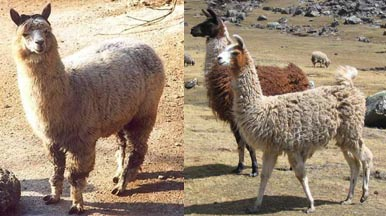

camélidos andinos: alpacas y llamas

Descendientes domesticados de dos variedades de camélidos salvajes (la vicuña y el guanaco respectivamente), las alpacas (a la izquierda) y las llamas (a la derecha), siguen siendo importantes en la economía andina. Constituyeron un elemento fundamental en la formación de sociedades complejas en los Andes por la carne y la lana que proporcionan y porque pueden mantenerse de una dieta del pasto resistente autóctono de las tierras altas, donde pocas plantas pueden sobrevivir las condiciones climáticas.